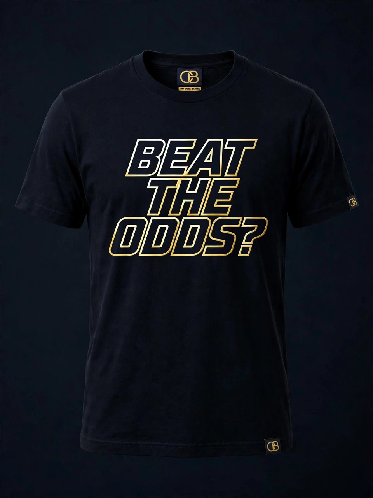
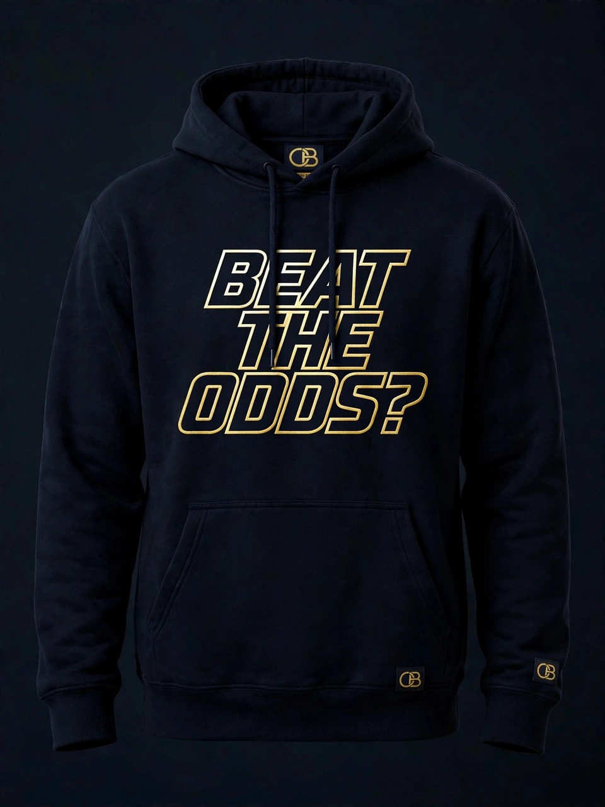

READ THIS GAME · BROADCAST BREAKDOWN
Matchup
1 · The Moneyline
2 · The Spread
3 · The Total
Education only. A price is a probability in disguise — reading it is the skill; the outcome is never promised.
Sportsbook literacy · Every sport · Education only · 18+
Every sport that has a board, on one board — live scores from the real leagues, and the education to read what the prices are actually saying. We teach the board. We never sell the bet.
Live · All sports
We pull real scoreboards live from ESPN's public feed. Tap any head-to-head game, and the desk reads it for you — moneyline, spread, and total — the way we teach it on the channel. Scores are facts from the feed; prices in the lessons are labeled samples unless the feed itself lists a line.
READ THIS GAME · BROADCAST BREAKDOWN
1 · The Moneyline
2 · The Spread
3 · The Total
Education only. A price is a probability in disguise — reading it is the skill; the outcome is never promised.
The desk · Working demos
The two demos from our lessons are live on the page. These are sample prices only — this is a classroom, not a betting window.
Tap a price, or type any price, and the board converts it to the win probability it implies: its break-even line.
At −110 you must win 52.4% of the time just to break even. A coin flip wins 50% — that 2.4% gap, charged on both sides, is the vig.
Chain standard −110 legs and watch the payout — and the true hit rate — move in opposite directions.
3 legs at −110 pay about +596 — but at fair coin-flip odds all three hit just 12.5% of the time. The payout multiplies. So does the vig.
| Term | What it means | What to notice |
|---|---|---|
| Moneyline | A straight bet on who wins. Minus price = favorite, plus price = underdog. | The size of the minus is the book telling you how likely the win is. |
| Point spread | A handicap. The favorite must win by more than the number; the underdog can lose by less, or win outright. | The spread is the book balancing action, not predicting the score. |
| The vig (juice) | The book's built-in cut. Both sides at −110 imply 104.8% total probability — the extra 4.8% is the fee. | Real-world probabilities sum to 100%. On the board, they don't. That gap is the business. |
| Implied probability | The win chance a price implies. −110 implies 52.4%; +150 implies 40%. | If your honest estimate is below the implied number, the price is bad, full stop. |
| Parlay | Multiple bets chained into one ticket. Every leg must win; the payout multiplies, and so does the house edge. | Three −110 legs pay ≈ +596 but hit 12.5% of the time at fair odds. |
The Desk Log
The desk updates this log; it is never dressed up as a live feed. An entry runs when it is decided and sourced, never before. This log covers every sport the Board follows: baseball, football, basketball, hockey, college sports, and combat sports. November runs baseball-heavy because this is baseball's decision season; the log fills across all sports as moves are decided.
| Award | Announced | Result | Status |
|---|---|---|---|
| Manager of the Year | Nov 10 | AL: Will Venable, White Sox · NL: Pat Murphy, Brewers — BBWAA | Decided |
| Cy Young | Nov 11 | Winners entered here as they are announced | Announcing today |
| Reliever of the Year | Nov 11 | Winners entered here as they are announced | Announcing today |
| MVP | Nov 12 | Winners entered here as they are announced | Scheduled |
No entries in this sport yet, the desk adds them as they are decided.
All-sports coverage
Jose's rule: every sport that can make money gets covered. If it has a real betting market, it has a tile on this wall and a Film Room segment below, live feed where a public one exists, full education module either way. Select a tile to open its Film Room.
FILM ROOM
Every sport's board has the same skeleton, a favorite, an underdog, and a fee wearing different clothes. The Film Room strips each one down: its main markets, what the prices mean, and the trap built into its most popular bet. Sample numbers are labeled samples, always.
Showcase · The Talent Floor
Who's rising, judged on public game tape.
No odds in this band.
Two lanes run on this floor. Tape evaluations assess public games and meets using the same approach as scouts in any sport, considering school, class, position, measurables, and tape. That makes a standout easier to evaluate and harder to overlook. Spotlight profiles are the second lane: a named athlete presented as a profile in one standard format. Both lanes are for evaluation only: no prices, no odds, and no board for high-school games, ever.
The floor holds one to three players at a time, drawn from every field of sport court, field, track, pool, mat, and ice including athletes on the road to the Olympics. It is a showcase, not a directory: the slots turn over as new tape earns them.
SAMPLE PROFILE FORMAT PREVIEW
Every featured profile runs in exactly this shape
School: sample program, varsity starter since sophomore year · Position: point guard · Measurables: 6'2", verified at camp · What the tape shows: full-game tape linked, not just highlights decision-making against pressure, both ends of the floor · Recruiting status: uncommitted, Division 1 offers on file. Every value on this card is a labeled sample; a real spotlight verifies each entry before it runs.
Are you an exceptional prospect, or do you coach one? Spotlight submissions run through the channel reach the Board on YouTube or Instagram, linked below. A profile runs only with the athlete's own OK and, for any athlete under 18, a parent or guardian's written OK on file first. No exceptions, and no fees, ever: the Spotlight is an outlet, not a pay-to-play board. Recruiters: every profile is on the record, in the same scan-ready format, with tape linked.
Community · Highlights
This is where the community's best work lands: verified Prospect Spotlights, readers' board reads that teach the math, and probability calls graded on the record after the fact. Every featured entry names who sent it and when. Samples are labeled samples. Visitors vote on the wall by backing the feature that earns it, one vote per showcase.
Sample Prospect Spotlight
How a cleared spotlight looks once every line checks out: school and measurables verified, full-game film on file, and for any athlete under 18 a parent or guardian's written OK before the profile runs.
Sample Reader Board Read
A reader breaks a live board down in plain language the favorite, the fee, and what the price is really saying. The clearest read of the week gets featured here, with the reader's name on it.
Sample The Graded Call
A reader posts a probability estimate before the game; it is graded afterward and stays on the record, right or wrong. Education in public: the grade is the lesson, never a tip sheet.
Submissions run through the channel reach the Board on YouTube or Instagram, linked below. Features run with the sender's OK, and prospect features keep the Spotlight's consent rules in full.
Your vote is saved on this device. Community voting opens at launch.
Merchant
The Odds Board's designs appear on the shirt and sweater. Designs with front and back prints show both views flip the card. Sales open with the store.


Clothing


Clothing
Drop news and design requests run through the channel, linked below.
Content pillars
Pillar 01
Moneyline vs. spread, favorites and underdogs, reading a full board at a glance the vocabulary everything else builds on, in every sport on the wall.
Pillar 02
The vig, implied probability, and break-even percentages the quiet arithmetic that decides whether a price is fair before any game is played.
Pillar 03
How legs multiply payouts and probabilities at the same time, and why the ticket that pays the most is priced to miss the most.
Start here
Start with three short lessons, in order, on our YouTube channel. After these, every price you see in any sport will read differently.